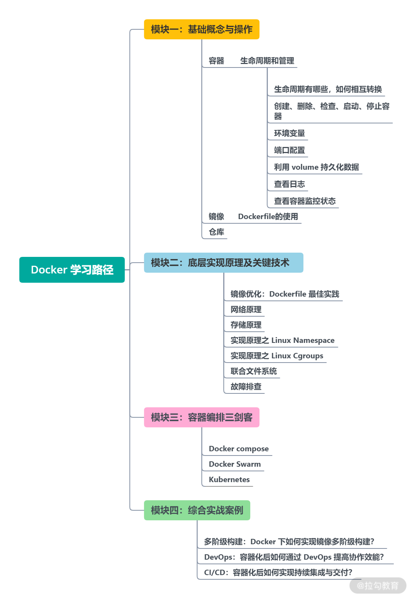

- 00 溯本求源，吃透 Docker！.md.html
- 01 Docker 安装：入门案例带你了解容器技术原理.md.html
- 02 核心概念：镜像、容器、仓库，彻底掌握 Docker 架构核心设计理念.md.html
- 03 镜像使用：Docker 环境下如何配置你的镜像？.md.html
- 04 容器操作：得心应手掌握 Docker 容器基本操作.md.html
- 05 仓库访问：怎样搭建属于你的私有仓库？.md.html
- 06 最佳实践：如何在生产中编写最优 Dockerfile？.md.html
- 07 Docker 安全：基于内核的弱隔离系统如何保障安全性？.md.html
- 08 容器监控：容器监控原理及 cAdvisor 的安装与使用.md.html
- 09 资源隔离：为什么构建容器需要 Namespace ？.md.html
- 10 资源限制：如何通过 Cgroups 机制实现资源限制？.md.html
- 11 组件组成：剖析 Docker 组件作用及其底层工作原理.md.html
- 12 网络模型：剖析 Docker 网络实现及 Libnetwork 底层原理.md.html
- 13 数据存储：剖析 Docker 卷与持久化数据存储的底层原理.md.html
- 14 文件存储驱动：AUFS 文件系统原理及生产环境的最佳配置.md.html
- 15 文件存储驱动：Devicemapper 文件系统原理及生产环境的最佳配置.md.html
- 16 文件存储驱动：OverlayFS 文件系统原理及生产环境的最佳配置.md.html
- 17 原理实践：自己动手使用 Golang 开发 Docker（上）.md.html
- 18 原理实践：自己动手使用 Golang 开发 Docker（下）.md.html
- 19 如何使用 Docker Compose 解决开发环境的依赖？.md.html
- 20 如何在生产环境中使用 Docker Swarm 调度容器？.md.html
- 21 如何使 Docker 和 Kubernetes 结合发挥容器的最大价值？.md.html
- 22 多阶级构建：Docker 下如何实现镜像多阶级构建？.md.html
- 23 DevOps：容器化后如何通过 DevOps 提高协作效能？.md.html
- 24 CICD：容器化后如何实现持续集成与交付？（上）.md.html
- 25 CICD：容器化后如何实现持续集成与交付？（下）.md.html
- 26 结束语 展望未来：Docker 的称霸之路.md.html
00 溯本求源，吃透 Docker！
你好，我是你的 Docker 老师——郭少。
我是从 2015 年开始使用和推广容器技术的，算是国内首批容器践行者。当时，我还在从事 Java 业务开发，业务内部的微服务需要做容器化改造，公司首席架构师牵头成立了云平台组，很荣幸我被选入该小组，从此我认识了 Docker。
刚开始接触时，我十分惊叹于 Docker 竟同时拥有业务隔离、软件标准交付等特性，而且又十分轻量，和虚拟机相比，容器化损耗几乎可以忽略不计。
接下来 5 年多的时间，我便在容器领域深耕，帮助过多家企业实现业务容器化，其间曾经在 360 推广容器云技术，实现了单集群数万个容器的规模，同时设计和开发了 Kubernetes 多集群管理平台 Wayne（有多家公司将 Wayne 用于生产环境）。2019 年，我被 CNCF 邀约作为嘉宾分享容器化实践经验，那时容器已经成为云计算的主流，以容器为代表的云原生技术，已经成为释放云价值的最短路径。
而在平时工作中，我仍然发现很多人在学习和实践 Docker 时，并非一路坦途：
- 学习 Docker 会顾及较多，比如，我不会 Golang 怎么办？Linux 懂一点行吗？
- 对 Docker 的知识掌握零零碎碎，不系统，说自己懂吧，但好像也懂得不多，还是经常会查资料。
- 自己对 Docker 底层原理理解欠缺，核心功能掌握不全，遇到问题时无法定位，耽误时间。
- 不知道如何使用 Docker 提升从开发到部署的效率？
- 不同场景下，如何选用最适合的容器编排和调度框架？
这些境遇恰是我曾走过的路，对此我也有很多感悟和思考，因此也一直希望有机会分享出来，这个课程正好是一个契机，相信我在这个行业实践的一些方法和思路能给你带来很多启发和帮助。
我是如何学习 Docker 的？
当今，Docker 技术已经形成了更为成熟的生态圈，各家公司都在积极做业务容器化改造，大家对 Docker 也都已经不再陌生。但在我刚接触 Docker 时，市面上的资料还非常少，甚至官网的资料也不太齐全。为了更深入地学习和了解 Docker，我只能从最笨但也最有效的方式入手，也就是读源码。
为什么说这是最笨的方法？因为想研究 Docker 源码，就意味着我需要学习一门新的编程语言 —— Golang。
虽然我当时已经掌握了一些编程语言，比如 Java、Scala、C 等，但对 Golang 的确十分陌生。好在 Golang 属于类 C 语言，当时我一边研究 Docker 源码，一边学习 Golang 语法。虽然学习过程有些艰辛，但结果很好。我只用了一周左右，便熟悉了这门新的编程语言，并从此与 Golang 和 Docker 结下了不解之缘。这可以说是我的另一层意外收获。
然而，在学习 Docker 源码的过程中我又发现，想要彻底了解 Docker 的底层原理，必须对 Linux 相关的技术有一定了解。例如，我们不了解 Linux 内核的 Cgroups 技术，就无法知道容器是如何做资源（CPU、内存等）限制的；不了解 Linux 的 Namespace 技术，就无法知道容器是如何做主机名、网络、文件等资源隔离的。
我记得有一次在生产环境中，告警系统显示一台机器状态为 NotReady，业务无法正常运行，登录机器发现运行docker ps命令无响应。这是当时线上 Docker 版本信息：
$ docker -v
$ Docker version 17.03.2-ce, build f5ec1e2
$ docker-containerd -v
$ containerd version 0.2.3 commit:4ab9917febca54791c5f071a9d1f404867857fcc
$ docker-runc -v
$ runc version 1.0.0-rc2
$ commit: 54296cf40ad8143b62dbcaa1d90e520a2136ddfe
$ spec: 1.0.0-rc2-dev
这里简单介绍下我当时的排查过程。
我首先打开 Docker 的调试模式，查看详细日志，我根据调试日志去查找对应的 Docker 代码，发现是 dockerd 请求 containerd 无响应（这里你需要知道 Docker 组件构成和调用关系），然后发送 LinuxSIGUSR1信号量（这里你需要知道 Linux 的一些信号量），打印 Golang 堆栈信息（这里你需要了解 Golang 语言）。最后结合内核 Cgroups 相关日志（这里你需要了解 Cgroups 的工作机制），才最终定位和解决问题。
可以看到，排查一个看起来很简单的问题就需要用到非常多的知识，首先需要理解 Docker 架构，需要阅读 Docker 源码，还得懂一些 Linux 内核问题才能完全定位并解决问题。
相信大多数了解 Docker 的人都知道，Docker 是基于 Linux Kernel 的 Namespace 和 Cgroups 技术实现的，但究竟什么是 Namespace？什么是 Cgroups？容器是如何一步步创建的？很多人可能都难以回答。你可能在想，我不用理会这些，照样可以正常使用容器呀，但如果你要真正在生产环境中使用容器，你就会发现如果不了解容器的技术原理，生产环境中遇到的问题你很难轻松解决。所以，仅仅掌握容器的一些皮毛是远远不够的，需要我们了解容器的底层技术实现，结合生产实践经验，才能让我们更好地向上攀登。
当然，我知道每个人的基础都不一样，所以在一开始规划这个课程的时候，我就和拉勾教育的团队一起定义好了我们的核心目标，就是“由浅入深带你吃透 Docker”，希望让不同基础的人都能在这个课程中收获满满。
送你一份“学习路径”
接下来，是我们为你画出的一个学习路径，这也是我们课程设计的核心。

用一句话总结，我希望这个课程从 Docker基础知识点到底层原理，再到编排实践，层层递进地展开介绍，最大程度帮你吸收和掌握 Docker 知识。
- 模块一：基础概念与操作
在模块一，我首先会带你了解 Docker 基础知识以及一些基本的操作，比如拉取镜像，创建并启动容器等基本操作。这样可以让你对 Docker 有一个整体的认识，并且掌握 Docker 的基本概念和基本操作。这些内容可以满足你日常的开发和使用。
- 模块二：底层实现原理及关键技术
在对 Docker 有个基本了解后，我们就进入重点部分—— Docker 的实现原理和关键性技术。比如，Namespace 和 Cgroups 原理剖析，Docker 是如何使用不同覆盖文件系统的（Overlay2、AUFS、Devicemapper），Docker 的网络模型等。当然，在这里我会趁热打铁，教你动手写一个精简版的 Docker，这能进一步加深你对 Docker 原理的认知。学习这些知识可以让你在生产环境中遇到问题时快速定位并解决问题。
- 模块三：编排技术三剑客
仅仅有单机的容器只能解决基本的资源隔离需求，真正想在生产环境中大批量使用容器技术，还是需要有对容器进行调度和编排的能力。所以在这时，我会从 Dcoker Compose 到 Docker Swarm 再到 Kubernetes，一步步带你探索容器编排技术，这些知识可以让你在不同的环境中选择最优的编排框架。
- 模块四：综合实战案例
在对容器技术原理和容器编排有一定了解后，我会教你将这些技术应用于 DevOps 中，最后会通过一个 CI/CD 实例让你了解容器的强大之处。
我希望这样的讲解框架，既能让你巩固基础的概念和知识，又能让你对 Docker 有更深一步的认识，同时也能让你体会容器结合编排后的强大力量。最重要的是，你不用再自己去研究这么多繁杂的技术点，不用再自己去头痛地读源码，因为这些事情正好我都提前帮你做了。
寄语
现阶段，很多公司的业务都在使用容器技术搭建自己的云平台，使用容器云来支撑业务运行也成为一种趋势，所以公司都会比较在意业务人员对 Docker 的掌握情况。那我希望这个课程，能够像及时雨一样，帮你彻底解决 Docker 相关的难题。
如果说，我们已经错过了互联网技术大爆发的时代，也没有在以虚拟机为代表的云计算时代分得一杯羹。那么，这次以 “容器” 为代表的历史变革正呼之欲出，你又有什么理由错过呢？